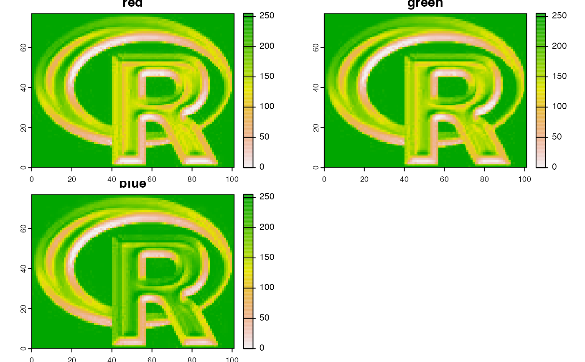

Layers representing colors
RGB.RdWith RGB you can get or set the layers to be used as Red, Green and Blue when plotting a SpatRaster. Currently, a benefit of this is that plot will send the object to plotRGB. You can also associated the layers with another color space (HSV, HSI or HSL)
With colorize you can convert a three-layer RGB SpatRaster into other color spaces. You can also convert it into a single-layer SpatRaster with a color-table.
Usage
# S4 method for class 'SpatRaster'
RGB(x, value=NULL, type="rgb")
# S4 method for class 'SpatRaster'
RGB(x, ..., type = "rgb") <- value
# S4 method for class 'SpatRaster'
colorize(x, to="hsv", alpha=FALSE, stretch=NULL,
grays=FALSE, NAzero=FALSE, filename="", overwrite=FALSE, ...)
# S4 method for class 'SpatRaster'
has.RGB(x, strict=TRUE)Arguments
- x
SpatRaster
- value
three (or four) positive integers indicating the layers that are red, green and blue (and optionally a fourth transparency layer). Or
NULLto remove the RGB settings- type
character. The color space. One of "rgb" "hsv", "hsi" and "hsl"
- to
character. The color space to transform the values to. If
xhas RGB set, you can transform these to "hsv", "hsi" and "hsl", or use "col" to create a single layer with a color table. You can also use "rgb" to back transform to RGB- alpha
logical. Should an alpha (transparency) channel be included? Only used if
xhas a color-table andto="rgb"- stretch
character. Option to stretch the values to increase contrast: "lin" (linear) or "hist" (histogram). Only used for transforming RGB to col
- grays
logical. If
TRUE, a gray-scale color-table is created. Only used for transforming RGB to col- NAzero
logical. If
TRUE, NAs are treated as zeros such that a color can be returned if at least one of the three channels has a value. Only used for transforming RGB to ("col")- strict
logical. If
TRUE, the function returnsFALSEif a color space such as "hsv", "hsi" and "hsl" is used- filename
character. Output filename
- overwrite
logical. If
TRUE,filenameis overwritten- ...
additional arguments for writing files as in
writeRaster
Examples
r <- rast(system.file("ex/logo.tif", package="terra"))
RGB(r)
#> [1] 1 2 3
plot(r)
has.RGB(r)
#> [1] TRUE
RGB(r) <- NULL
has.RGB(r)
#> [1] FALSE
plot(r)

RGB(r) <- c(3,1,2)
# same as
# r <- RGB(r, c(3,1,2))
plot(r)
RGB(r) <- 1:3
x <- colorize(r, "col")
y <- colorize(r, "hsv")
z <- colorize(y, "rgb")